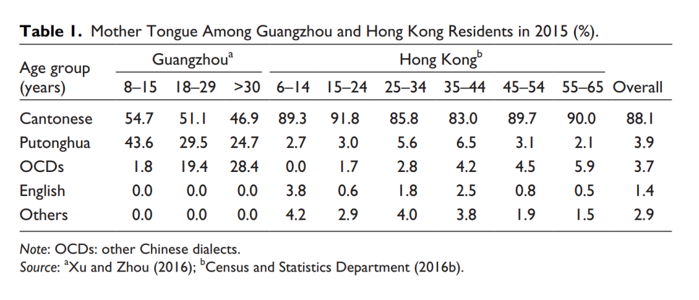
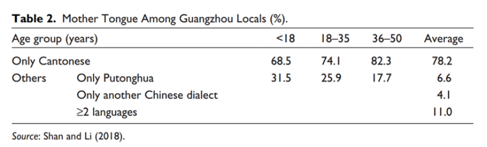
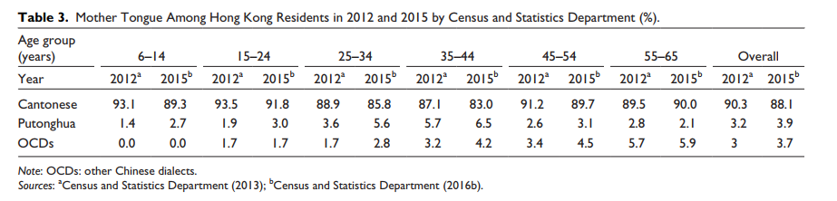
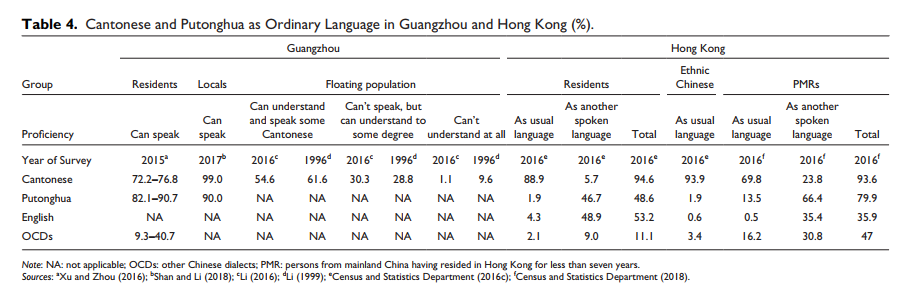
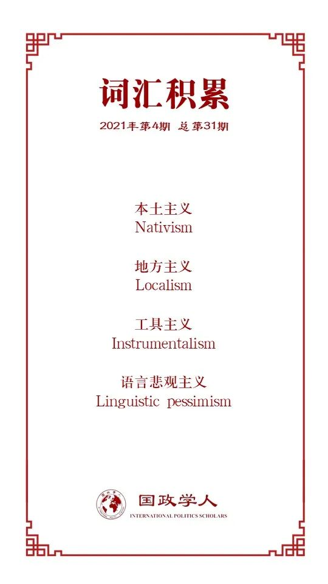

收录于合集

作品简介
【作者】 沙伯力（Barry Sautman），香港科技大学社会科学部教授。他在哥伦比亚大学获得政治学博士学位。研究领域主要涉及前苏东国家政治制度、中国政治（尤其是民族政治）、中非关系、中美关系、国际法。他的最新专著是《中国在非洲：话语与实践》（北京：中国社会科学文献出版社）。
Xinyi Xie，加拿大约克大学奥斯古德霍尔法学院的法学博士候选人。她的研究兴趣包括当代中国社会和中国法律。
**【 编译】**石稚瑄（国政学人编译员，国际关系学院国际政治系）
【校对】 徐一君 阮镇炜
【审核】 朱文菡
【排版】 黄晨蕊
【美编】 杜丛竹
【来源】 Barry Sautman & Xinyi Xie, Today in Guangzhou, Tomorrow in Hong Kong? A Comparative Study of the Language Situation in Two Cities. Journal of Current Chinese Affairs , Vol. 49(2), 2021, pp.207–232. doi: 10.1177/1868102620983939.
【归档】 《国际关系前沿》2021年第4期，总第31期。
期刊简介
《当代中国事务杂志》（Journal of Current Chinese Affairs）是德国全球与区域研究所（The German Institute for Global and Area Studies）下属的亚洲研究所（The GIGA Institute for Asian Studies）每年出版3期的同行评审学术期刊，聚焦于大中华区当前的发展。该刊2018年影响因子为0.54。
今日广州，明日香港？
两座城市语言状况比较研究
Today in Guangzhou, Tomorrow in Hong Kong?
A Comparative Study of the Language Situation in Two Cities
沙伯力教授
内容提要
包括本土主义者（“地方主义者”）和普通民众在内的许多香港人对粤语的命运表示担忧。广州被视为粤语衰落的先例。新闻评论把广州的粤语状况描绘成一幅暗淡景象。但是，少有调查关注粤语在广州的使用和认同，也少有分析关注香港和广州之间的社会环境差异如何影响这两个城市的语言状况。本文通过比较母语、日常用语和语言态度来描述广州和香港的语言状况。粤语在香港享有无与伦比的地位，在广州仍然极其重要。本文在动机和迁移的社会文化环境下，对比了两个城市粤语和普通话的使用频率和熟练程度。结论是：一些关于粤语衰落的断言毫无根据。不过，本文也讨论了在香港粤语衰落甚或被取代的可能性。
文章导读
01
导论
本土主义者认为，粤语将被普通话取代而逐渐消亡。广东省会广州被香港人看作是粤语衰落的先例。本土主义的拥护者在脸书上分享有关广州粤语使用状况的新闻报道。“今日广州，明日香港”是最受认可的观点。香港大学某位语言学家认为：“如果想了解香港粤语未来的命运，我相信我们要做的就是看看广州的粤语发生了什么……”
有关广州语言状况的信息通常是不完整的。相关新闻报道并没有全面反映该市的语言状况。在鲍尔的一篇文章中，广州粤语衰落被认为是一个潜在的先兆。然而，对广州的观察评论可以并且应该得到研究结果的证实。本文的研究有两个目的。首先，本文旨在帮助读者对广州和香港的语言状况有一个全面的了解，为当前有关粤语衰落的讨论提供信息。其次，本文寻求回答以下问题：“粤语在香港衰落的可能性有多大，或者其被普通话取代的可能性有多大？”
02
母语
广州的母语
语言学家在2017年对广州居民的母语进行了一项研究，调查了155名在其出生前父母便已定居广州的本地人（如表2所示）。社会学家在2015年又进行了另一项研究，调查了624名有广州户口的居民，其中包括移民（如表1所示）。
广州的年轻一代并没有停止讲粤语。表1显示，广州居民中，以粤语为母语的年轻人多于年龄较大的人群。表2显示，较少的当地年轻人称粤语为“唯一的母语”。然而，调查并未显示每个年龄段有多少本地人将粤语和另一种语言作为母语。平均而言，我们仍然可以推断出绝大多数（> 78.2％）的广州本地人都以粤语为母语。
 
香港的母语
表3显示，香港政府统计处发现不同年龄段存在相似的情况。中年组（25-44岁）里以粤语为母语的人数占比处于较低水平。从2012年到2015年，中年组的变化最大。三年来，以粤语为母语的人数占比的最大下降幅度出现在25-44岁年龄段里。母语为普通话的人数略有上升，而中年组的人数增长最多。
移民迁入很可能解释了这三年间的差异变化。所有年龄组中各种母语的人数占比同时发生了变化。由于一个人的母语不会随着时间而改变，因而实际上改变的只是香港的人口构成。从2012年到2015年，中年人的人口构成可能发生了最大的变化，这与中年组呈现的观察变化最大相符。由于许多新移民将普通话或其他方言作为母语，以这两种语言为母语的人数有所增加，而以粤语为母语的人数则略有减少。

03
日常用语
广州的日常用语
广州居民的日常用语。 如表4所示，粤语是广州本地人最常使用的语言，而普通话则是常住居民最常使用的语言。与家人交流时，粤语使用率高于普通话。而在专业场合或与同伴一起时，普通话的使用则更为频繁。
广州流动人口中的粤语。 如表4所示，广州的大多数流动人口都懂粤语。据学者分析，粤语水平反映出广州新移民融入当地社会的程度。表4比较了1996年和2016年进行的调查。尽管相隔二十年，但广州流动人口的粤语水平却是一致的。很少有人完全听不懂粤语。
香港的日常用语
香港居民的日常用语。 香港人口普查区分两种口语。第一种是“常用语言”，第二种是“另一种语言”。表4列出了2016年香港日常用语的调查结果。英语在香港的地位虽然没有超过粤语，但比普通话高。表4显示讲英语的人数比讲普通话的多。在专业交流、正式场合或有不讲粤语的人在场时，英语比普通话优先。
新港民（来自中国内地，在香港居住不到7年的人）的粤语。 新港民有时被认为威胁了粤语在香港的地位。新港民的语言使用状况可以反映这一问题的真实情况。如表4所示，2016年至少93.6%的新港民会讲粤语，而其中69.8%的新港民将粤语作为常用语言。相比之下，仅13.5%的新港民将普通话作为常用语言。此外，2016年新港民仅占香港总人口的2.4%。大多数人每天都讲粤语，这几乎不会危害粤语在香港的地位。

04
语言态度
本部分通过考察“融入型取向（integrative orientation）”和“工具型取向（instrumental orientation）”，探讨了两座城市居民的语言态度。加德纳（Gardner）和兰伯特（Lambert）将“融入型取向”定义为一个人对语言社会的态度，而“工具型取向”则与“渴望获得社会认可或经济利益”有关。
广州的语言态度
广州对粤语的态度显示出高度积极的融入型取向。广州的受访者认为粤语比普通话更“友好”、“易于理解”或“可亲”。本地人还认为粤语是广州身份的标志。普通话与社会影响和实用价值相关。与粤语相比，对普通话的态度表现出很高的工具型取向。其家庭最近在广州定居的受访者在融入型取向和工具型取向两方面都对普通话持积极态度。语言态度可能存在代际差异，这可能是因为广州的许多年轻人是移民的后代。
香港的语言态度
粤语在香港的融入型取向与工具型取向都远远超过了普通话。粤语已成为当地文化认同不可或缺的一部分。尽管一些人认识到普通话的实用价值，但更多的人发现它的实用性不如粤语和英语。英语展现出比普通话更高的融入型取向和工具型取向，对受访者的工具价值甚至超过粤语。
05
广州和香港的比较
粤语是广州和香港大多数人的母语。普通话是广州的第二种主要母语。在香港，普通话并没有那么受重视，2015年其作为母语的比例仅占3.9%。这两座城市的普通话和粤语在熟练程度和使用频率上也有所不同。尽管有近90%的广州本地受访者讲普通话，但只有1.9%的香港居民在日常交流中常用普通话。与广州人相比，讲粤语的香港居民更多。在专业交流中，粤语在香港使用得更为频繁。尽管这两座城市的新移民在某种程度上掌握了粤语，但与广州的流动人口相比，香港的新港民更精通粤语，并且使用粤语的频率更高。
06
差异背后：动机与迁移
语言学家解释第二语言习得时，存在三个共同的主题：形式、认知和社会文化。社会文化着眼于社会和情感环境，以及学习者对特定身份的个人抱负。迄今为止，没有一种方法能够成功覆盖所有这些主题。由于本文试图解释两座城市的语言使用差异，因此采用了社会文化路径。
尽管如此，在社会文化“阵营”中仍然存在着各种各样的方法。为了考察语言使用差异中的社会环境，本文采用加德纳和兰伯特的“社会-教育”模型（socio- educational model）中的一个核心因素——动机，并在此基础上讨论了迁移的影响。
动机
加德纳发现了动机的两种环境。第一种是教育环境，比如教育系统的期望、教师技能和课堂气氛。第二种是围绕学习者的文化社会世界和文化信仰。
我们可以用这两种动机来解释为什么广州讲普通话的本地人数量比香港多。从教育环境看，该现象可用两个地区独特的教育环境来解释。在广州，根据2012年颁布的《广东省国家通用语言文字规定》，普通话是所有教育机构的基本语言。在广州的学校中，教学和评估都是用普通话进行。广州的教育系统希望学生能熟练掌握普通话。在香港，教育目标是两文三语。“三语”指粤语、普通话和英语。学生必须学习普通话，但学校当局可以决定是否以普通话或粤语授课。香港只有16.4%的小学和2.5%的中学（主要是初中）采用普通话作为唯一的中文教学语言。其他学校仅用粤语或结合粤语、普通话两种语言教授中文。
从文化背景看，香港本地人的动机也与广州本地人不同。广州的受访者对普通话持总体正面看法，并将其与社会地位、效用和礼貌联系在一起。在融入性方面，尽管广州本地人学习普通话的动机弱于学习粤语的动机，但仍然是积极的，这表明广州本地人对讲普通话的群体感兴趣。相比之下，香港人对普通话的态度是中立或消极的。在学校和专业交流中，普通话被认为用途有限，而且香港本地人对讲普通话的群体不感兴趣。
迁 移
迁移对语言变化具有两个主要影响。首先，这影响移民。移民需要学习当地语言以应对日常工作。第二，移民对目的地社会具有社会语言的影响。在广州的两种主要语言中，普通话是国家通用语言，而粤语是地区通用语言。移民认为有必要学习普通话或粤语，而广州本地人发现，随着越来越多的移民融入当地社会，学习普通话会有所帮助。
“迁移”角度解释了两座城市之间两种语言的使用差异。首先，它解释了为什么香港的内地移民比广州的移民更容易习得粤语。由于移民经常以该地区的主要语言作为其第二语言学习，来港新移民选择粤语。但是，对于广州的移民来说，由于普通话在广州也占主导地位，而且大多数广州本地人会讲普通话，移民即便在没有较高粤语水平的情况下也可以生活。
移民对目的地社会的深远社会语言影响也解释了为什么粤语作为母语在香港更强大。自上世纪90年代中国经济改革以来，广州涌入大量移民，广州本地人习得国家通用语言——普通话，并将其作为第二语言，以期与其他社会成员更好地交流。尽管内地移民也影响香港社会，但影响相对较小。毕竟，过去十年，来广州的移民规模比香港大得多。
07
差异背后：政治因素？
政治形势影响语言的使用。但是，自上而下的语言政策只是其中一部分。语言会因政策压力和个人行动的复杂混合而发生变化。也就是说，不能忽略政治形势中的其他部分——个人的政治身份、取向和价值观念，这些都是政府难以控制的。
语言政策指一个民族国家内官方授权的语言使用规则。正如上文“动机”讨论中所提到的，教育语言政策的差异一定程度地解释了广州本地人的普通话相比于香港本地人更为流利。不过，这种政策差异本身并不能证明本地人的母语保留能力有所下降。香港本地人普通话流利程度的提高并未以粤语衰落为代价。
另一方面，个人政治因素可以解释粤语在香港变得更强大的原因。最近的观察指出，香港的粤语进一步加强而不是衰落。目前，粤语已被政治化为香港人身份的标志，而另一种方式是把其他语言边缘化。
08
粤语的弹性
尽管政府努力推广普通话，粤语在香港和广州似乎至关重要。实际上，学者们认为粤语是“在声望和吸引中国内地学习的人数方面最强大的汉语方言”。
粤语的两个独特属性使其可以抵抗外界影响。首先，与中国的其他方言不同，书面形式的粤语在社交中被广泛使用，并登上广告和报纸。其次，广东省媒体允许使用粤语作为一种语言。
粤语使用者保护粤语的意识也有利于粤语在中国的生存。“粤语已经重新成为区域性通用语言，因为父母和祖父母都讲粤语的家庭已经意识到保存粤语以获得文化遗产和归属感的必要性。”
09
结论：
粤语对香港 的持续意义
作为母语和日常用语，粤语在香港享有无与伦比的地位，这与普通话在广州享有的重要地位形成了鲜明对比。广州居民表现出较高的普通话能力，而粤语在香港则更强大。从社会环境的角度，本文研究了动机和迁移因素如何解释这些差异。由于更高的教育期望和更积极的语言态度，广州本地人比香港人更有动力学习普通话。粤语在香港的强势地位还可以归因于移民的影响较小。与广州的移民相比，粤语在香港教育中较高的相关度和重要性让香港新港民的粤语流利度更高。考虑到这两个地区社会环境的复杂性，“今日广州，明日香港”是一种过度的简化。
语言学家认为，当人们认为一种语言濒临灭绝时，这种误解会削弱该语言。当我们采取措施保护粤语时，错误的信息可能会造成巨大的损失，它使人们的注意力从有效的粤语保护转移开来。“语言悲观主义正在伤害粤语，比其他语言或政府政策更为严重，至少在香港是这样。”
译者评述
许多香港人认为香港的粤语正在衰落，并提出了“今日广州，明日香港”的论断。然而这一论断并未得到证实。本文通过对比广州和香港的母语、日常用语和语言态度，勾勒出两座城市的语言状况。作者发现，粤语在广州和香港都具有至高的地位，而普通话在广州地位仅次于粤语，在香港地位还低于英语。在对广州和香港的语言状况进行比较之后，作者研究了差异背后的社会文化因素，包括动机和迁移。广州人学习普通话的动机比香港人强烈，内地移民对广州的影响也比对香港的影响深远。除此之外，政治因素也对这种差异产生了一定的影响。广州的语言政策有利于普通话的学习，但普通话流利程度的提高并不以粤语衰落为代价。香港人将粤语政治化为身份标志，香港的粤语正在加强而非衰落。与此同时，粤语的独特属性也使其可以抵抗外界影响。根据上述分析，作者认为“今日广州，明日香港”的论断言过其实。
本文的意义在于否定了香港本土主义者关于粤语衰落的论断，提出了推行普通话并不会导致粤语衰落的观点。 近年来，香港本土主义思潮起起伏伏，日益显现出极端化的趋势。对“今日广州，明日香港”论断的否定有利于恢复香港本土主义者对国家和民族的认同感，重建香港与内地共同的文化情感基础，从而有利于“一国两制”实践行稳致远。
词汇整理

文章观点不代表本平台观点，本平台评译分享的文章均出于专业学习之用, 不以任何盈利为目的，内容主要呈现对原文的介绍，原文内容请通过各高校购买的数据库自行下载。
好好学习，天天“在看”
国政学人
支持学术公益与知识传播
微信扫一扫赞赏作者 __赞赏
已喜欢，对作者说句悄悄话
取消 __
发送给作者
发送
最多40字，当前共字
上一页 1/3 下一页
长按二维码向我转账
支持学术公益与知识传播
受苹果公司新规定影响，微信 iOS 版的赞赏功能被关闭，可通过二维码转账支持公众号。